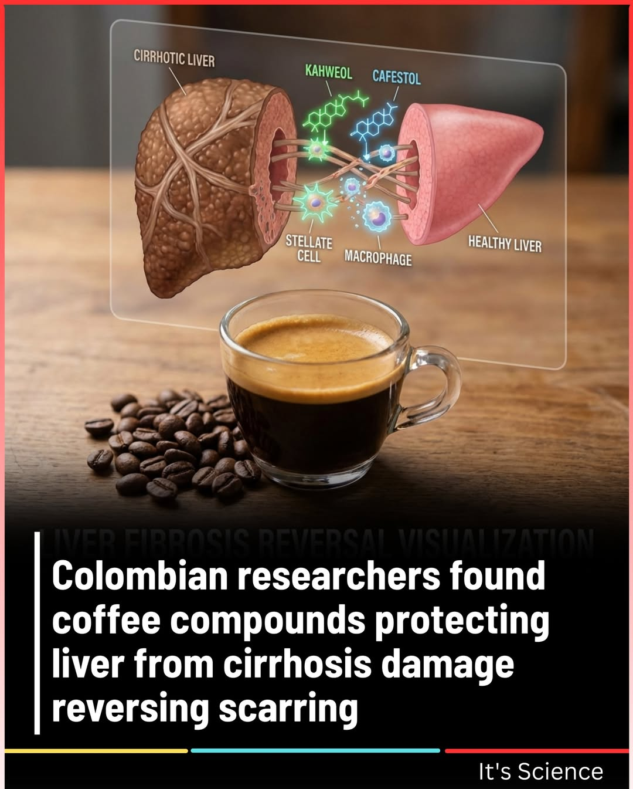

It’s true. Many studies have now linked coffee with decreased risk of liver cirrhosis and liver cancer. Coffee likely protects the liver.


Coffee compounds may activate PPAR-gamma, easing liver scarring and insulin resistance
Louis shares claims that coffee diterpenes (kahweol, cafestol) activate PPAR-gamma in hepatic stellate cells, breaking down scar tissue. His note links PPAR-gamma activation to coffee's apparent benefits for insulin resistance and diabetes.